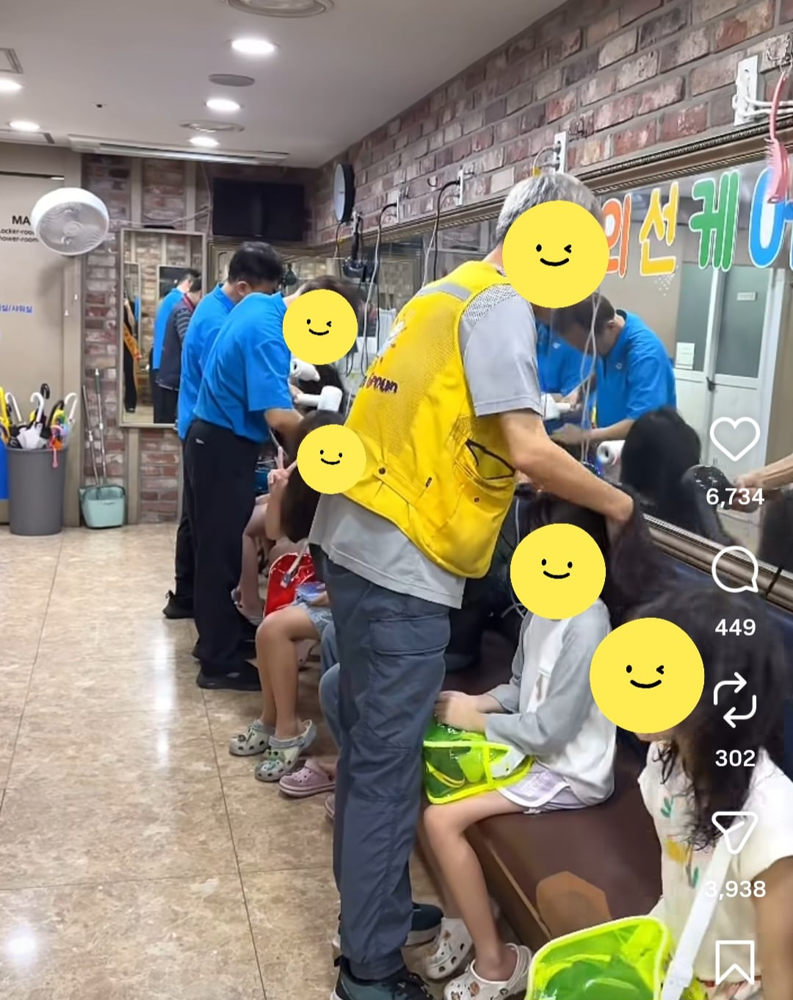
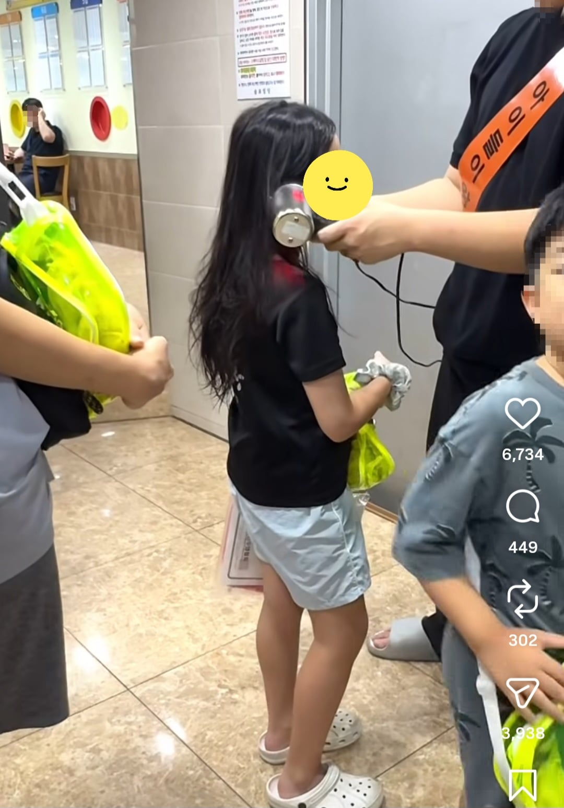
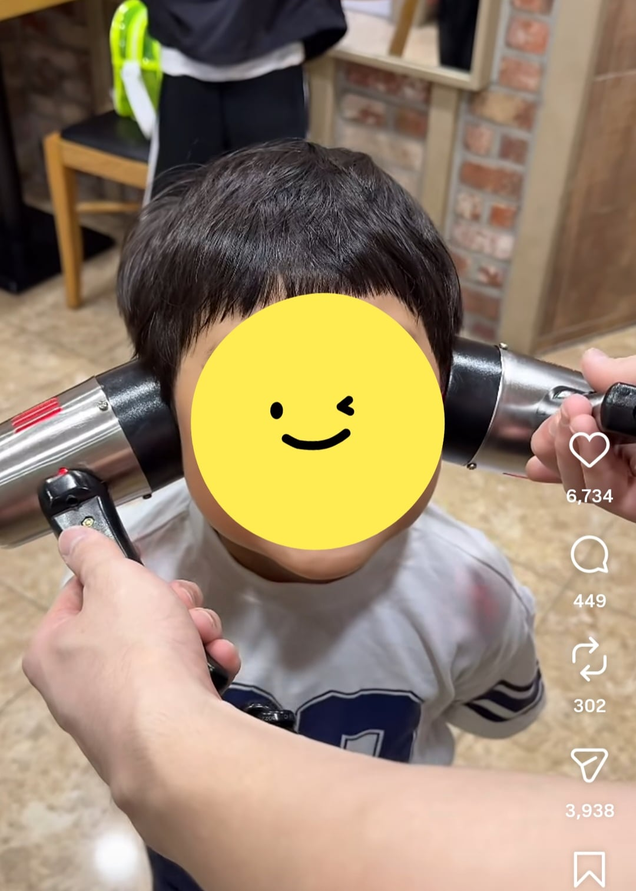
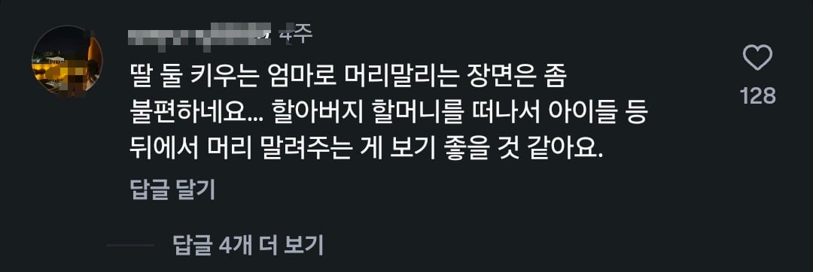
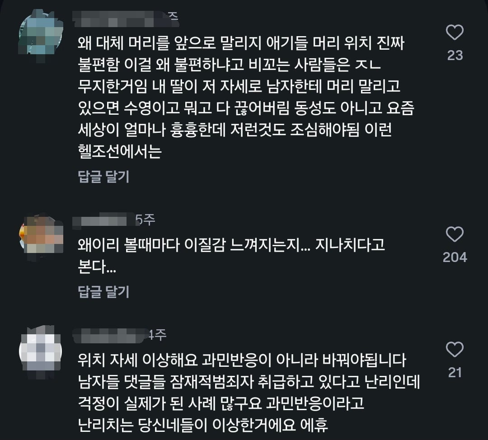

한 수영학원의 인스타 게시물
수업 후 차량기사님과 파트타이머 어르신들까지 동원하여
아이들 머리카락과 귀를 건조시켜주는 모습이다.


왜 여자선생님이 아닌 지,
앞을 바라보게 하고 머리를 말리는 지 등등
불만이 많은 딸엄마들
대체 무슨 생각을 하고 살면 저리 되는겨



한 수영학원의 인스타 게시물
수업 후 차량기사님과 파트타이머 어르신들까지 동원하여
아이들 머리카락과 귀를 건조시켜주는 모습이다.


왜 여자선생님이 아닌 지,
앞을 바라보게 하고 머리를 말리는 지 등등
불만이 많은 딸엄마들
대체 무슨 생각을 하고 살면 저리 되는겨
ㅇㅇ 직접 말리라고 하면 됨.
다만 필수적인 신체접촉이 아닌데 학부모가 이를 언급하면 민원 넣으면 공무원도 나서서 뭔가 권고를 함.
파트타이머가 노인일자리,공공일자리관련 국가보조를 받는거면 더욱 강하게 권고하는거고.
실제로 민원도 많이 들어옴.
뭐가 안민감해 ㅋㅋㅋ
쟤가 인스타 댓글들 옹호하는 것도 아니고
미성년자들 다루는 모든 사업장은 성별 관련해서 많이 민감해...
시설물 개선좀 해주세용 ㅎㅎ
뇌에 대체 뭐가 들었으면... 근데.. 도 한편으로 이해도 간다.. 좃같은 뉴스가 많이 나오니까..
시발ㅋㅋㄲㅋ ㅋㄲㅋ
의자가 저렇게 생겼는데 뒤에서 어케말림
그럼 퇴원하고 다른데 가라 ㅋㅋㅋㅋ
니들이 해 병신년들아 ㅋㅋ
의자가 저렇게 돼있구만 어쩌라고
경험에서 우러나오는 불편함 평소에 뭐하고 다니는지
빵의자 같은거 몇 개 가져다 두어라
남여를 떠나 저렇게 작업하는게 불편하긴 함. 그럴만한 환경이 아니어서 저렇게 하는거지
지들이 가정교육을 잘 시켰으면, 애들한테 알아서 말리라고 해도 잘 할 텐데
요청해서 우리 애는 빼주세요 하면 될듯
니가해
뭐 눈에는 뭐만 보인다지?
하나도 안예민하고 파트타임이라 돈도 안돼서 할사람도 많지않음 초등학교 등교 도우미분들이랑 다를게없음
저게 싫으면 직접 말리라고 교육하면돼